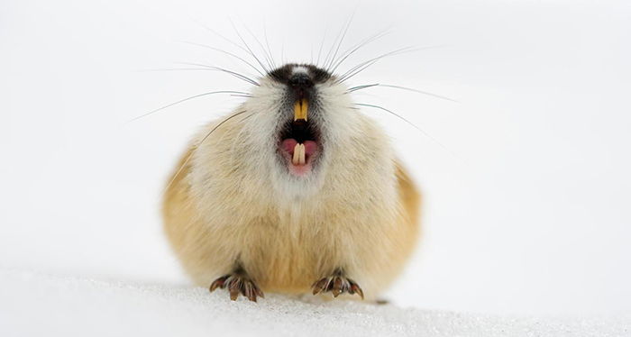

Lemming
A lemming is a small rodent usually found in or near the Arctic in tundra biomes. Lemmings are subnivean animals. They make up the subfamily Arvicolinae (also known as Microtinae) together with voles and muskrats, which forms part of the superfamily Muroidea, which also includes rats, mice, hamsters, and gerbils.
Description and habitat
Lemmings weigh from 30 to 110 g (1 to 4 oz) and are about 7 to 15 cm (3 to 6 in) long. They generally have long, soft fur, and very short tails. They are herbivorous, feeding mostly on leaves and shoots, grasses, and sedges in particular, but also on roots and bulbs. At times, they will eat grubs and larvae. Like other rodents, their incisors grow continuously, allowing them to exist on much tougher forage than would otherwise be possible.
Lemmings do not hibernate through the harsh northern winter. They remain active, finding food by burrowing through the snow and using grasses clipped and stored in advance. They are solitary animals by nature, meeting only to mate and then going their separate ways, but like all rodents, they have a high reproductive rate and can breed rapidly when food is plentiful. Go To Top
Behavior
Like many other rodents, lemmings have periodic population booms and then disperse in all directions, seeking the food and shelter their natural habitats cannot provide. The Norway lemming and brown lemming are two of the few vertebrates which reproduce so quickly that their population fluctuations are chaotic,rather than following linear growth to a carrying capacity or regular oscillations. It is not known why lemming populations fluctuate with such great variance roughly every four years, before numbers drop to near extinction.Lemming behavior and appearance are markedly different from those of other rodents, which are inconspicuously colored and try to conceal themselves from their predators. Lemmings, by contrast, are conspicuously colored and behave aggressively towards predators and even human observers. The lemming defense system is thought to be based on aposematism (warning display).
For many years, the population of lemmings was believed to change with the population cycle, but now some evidence suggests their predators' populations, particularly those of the stoat, may be more closely involved in changing the lemming population. Go To Top
Misconceptions
Misconceptions about lemmings go back many centuries. In the 1530s, geographer Zeigler of Strasbourg proposed the theory that the creatures fell out of the sky during stormy weather and then died suddenly when the grass grew in spring.This description was contradicted by natural historian Ole Worm who accepted that lemmings could fall out of the sky, but claimed that they had been brought over by the wind rather than created by spontaneous generation. Worm first published dissections of a lemming, which showed that they are anatomically similar to most other rodents such as voles and hamsters, and the work of Carl Linnaeus proved that they had a natural origin.
Lemmings have become the subject of a widely popular misconception that they commit mass suicide when they migrate by jumping off cliffs. It is in fact not a mass suicide but the result of their migratory behavior. Driven by strong biological urges, some species of lemmings may migrate in large groups when population density becomes too great. They can swim and may choose to cross a body of water in search of a new habitat. In such cases, many may drown if the body of water is so wide as to stretch their physical capabilities to the limit. This fact and the unexplained fluctuations in the population of Norwegian lemmings gave rise to the misconception. Go To Top
In popular culture and media
The misconception of lemming "mass suicide" is long-standing and has been popularized by a number of factors. It was well enough known to be mentioned in "The Marching Morons", a 1951 short story by Cyril M. Kornbluth. In 1955, Disney Studio illustrator Carl Barks drew an Uncle Scrooge adventure comic with the title "The Lemming with the Locket". This comic, which was inspired by a 1953 American Mercury article, showed massive numbers of lemmings jumping over Norwegian cliffs. Even more influential was the 1958 Disney film White Wilderness, which won an Academy Award for Documentary Feature, in which staged footage was shown with lemmings jumping into certain death after faked scenes of mass migration. A Canadian Broadcasting Corporation documentary, Cruel Camera, found the lemmings used for White Wilderness were flown from Hudson Bay to Calgary, Alberta, Canada, where they did not jump off the cliff, but were in fact forced off the cliff by the camera crew. Because of the limited number of lemmings at their disposal, which in any case were the wrong sub-species, the migration scenes were simulated using tight camera angles and a large, snow-covered turntable. Lemmings also appear in Arthur C. Clarke's 1953 short story "The Possessed", where their suicidal urges are attributed to the lingering consciousness of an alien group mind which had inhabited the species in the prehistoric past.
This same myth was also used in the Apple Computer 1985 Super Bowl commercial "Lemmings" and the popular 1991 video game Lemmings, in which the player must stop the lemmings from mindlessly marching over cliffs or into traps. In a 2010 board game by GMT games, Leaping Lemmings, players must maneuver lemmings across a board while avoiding hazards, and successfully launch them off a cliff. The 1994 short film "Lemming Aid" portrayed a group of misfits attempting to save lemmings from mass suicide (a guinea pig was used as a substitute for a lemming). American cartoonist Stephan Pastis's popular comic strip Pearls Before Swine frequently has strips starring four lemmings in humorous gossip and confessions just before they are about to jump over a cliff. A twist is put on the myth in the 2016 picture book Leaping Lemmings!, when one lemming refuses to jump off cliffs with the others as a lesson in thinking for yourself.
Because of their association with this odd behavior, lemming "suicide" is a frequently used metaphor in reference to people who go along unquestioningly with popular opinion, with potentially dangerous or fatal consequences. This metaphor is seen many times in popular culture, such as in the video game Lemmings, in episodes of Red Dwarf, and in Adult Swim's show Robot Chicken. In the eighth episode of season 1 of Showtime's The Borgias, the Pope's second son Juan refers to the college of cardinals as lemmings when they flee the Vatican in anticipation of an impending French invasion. The Blink 182 song "Lemmings" also uses this metaphor, as does the unrelated song of the same name by English progressive rock band Van der Graaf Generator (from their 1971 album Pawn Hearts), and the 1973 stage show National Lampoon's Lemmings starring John Belushi and mocking post-Woodstock groupthink. In the song "Synchronicity II" (from their 1983 album Synchronicity), The Police compare people in rush hour traffic to lemmings ("packed like lemmings into shiny metal boxes / contestants in a suicidal race"). Go To Top